论文阅读 | Ditto：An Elastic and Adaptive Memory-Disaggregated Caching System
文章出自香港中文大学，华为云左鹏飞参与指导，发表于SOSP`23。这项研究是作者在华为云实习期间完成的，主要工作是设计了一种面向分离式内存架构的缓存系统。缓存可能是分离式内存这种大内存系统最具实用价值的应用方向了，在我看来这篇论文选题上具备比较高的实践价值。
Paper Link: https://dl.acm.org/doi/10.1145/3600006.3613144
Open source: https://github.com/dmemsys/Ditto
背景
Memcached和Redis这类内存缓存系统被广泛应用于云服务中，以在数据访问中降低延迟和提高吞吐率。但这类缓存系统一般构建和部署在CPU和内存紧密耦合的一体式服务器上，这使得它们在动态资源调整过程时面临两个问题：
资源低效
一体式服务器架构下，硬件资源以CPU和内存紧密耦合的服务器节点为粒度进行分配。这不可避免地导致了资源浪费，例如，当仅仅是CPU或内存中的一类资源告急，服务器粒度的扩展还是会将另一类资源一同分配。
资源调整耗时长
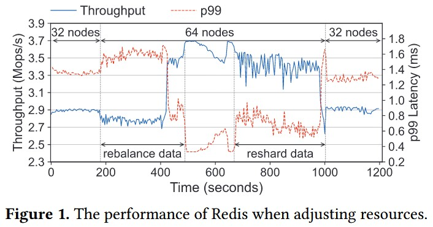
缓存系统通常以数据分片的方式实现多节点的部署。在资源调整时，集群节点数量发生变更，数据就需要经历重分片和迁移过程。这就引入了数据的迁移开销，期间系统性能不可避免地会下降。
分离式内存（DM）架构通过解耦CPU和内存资源解决上述问题。两类硬件资源解耦池化，分别形成计算节点（CN）构成的计算池和内存节点（MN）构成的内存池，二者通过CPU-bypass的高速网络（例如RDMA、CXL）互联，以实现更精细的资源分配，从而解决资源低效问题。此外，DM架构下所有CN都能直接寻址访问到所有MN的内存，因此资源调整不再需要数据迁移，只需要调整逻辑上的分配即可，由此避免了迁移开销和性能波动。
挑战
当然，不是直接将现有的缓存系统部署在DM上就完事大吉，面向DM构建缓存系统也有其挑战。
如何在client-centric模式下高效地执行缓存算法？
现有的缓存系统大都是以服务器为中心（server-centric）的架构，也即，数据的访问和淘汰替换均由缓存服务器的CPU集中完成。但在DM架构下，缓存系统更应该被设计为以客户端为中心（client-centric）的架构，因为负责缓存数据的MN没有充足的CPU资源，需要CN上的客户端通过CPU-bypass的方式进行数据访问和缓存算法执行。此时，难题随之而来。
一来，缺乏了中央服务，客户端就要自主进行缓存对象热度信息的维护，但CN上的客户端各自运行，难以感知整个缓存系统各缓存对象的全局访问情况。
二来，缓存的构建通常需要维护特殊的数据结构（例如链表、堆）来反映缓存对象的优先级情况。但在DM架构下，这些数据结构需要面临所有CN上的客户端的并发访问，因而需要复杂的机制和频繁的网络往返（RTT）来保证正确的读写，效率严重受损。
如何调整缓存算法以适应频繁动态变化的资源配置？
缓存算法的缓存命中率与数据访问模式和缓存大小有着紧密的关联，不同的情况有着各自最优的缓存算法，但这二者又受到硬件资源分配调整的影响。
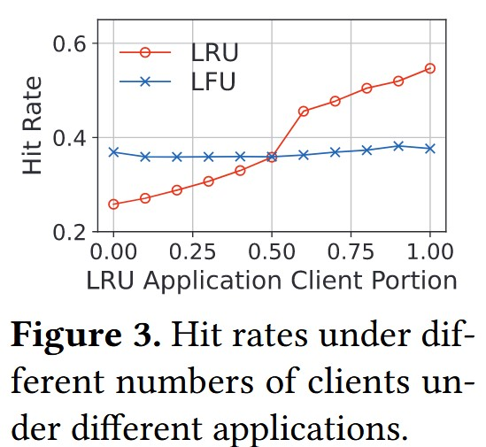
一来，DM上的缓存系统服务于大量的应用，每个应用各自表现出自己独特的访问模式，而整体系统的访问模式则是所有应用的访问模式的混合。因此，任意一个应用的计算资源受到调整时，都会影响整个系统的访问模式。
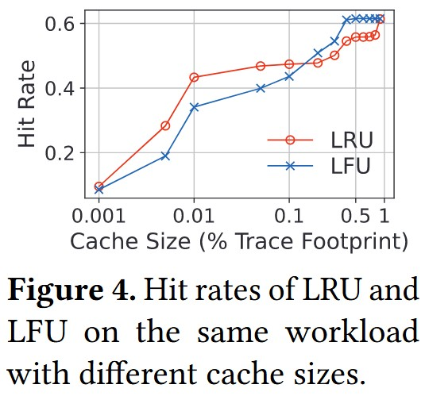
二来，内存资源的分配直接关系到缓存空间大小，而不同缓存大小下的最优缓存算法也是不同的，例如有些工作负载在低缓存空间时LRU更优，但在高缓存空间是LFU更优。
因此，DM上的缓存系统必须根据不断变化的资源配置动态选择最佳的缓存算法，以提高缓存命中率。
文章就针对上述两个问题提出解决方案，设计了面向DM架构的缓存系统Ditto（Ditto其实就是神奇宝贝里的百变怪😛）。
Ditto设计
架构概览
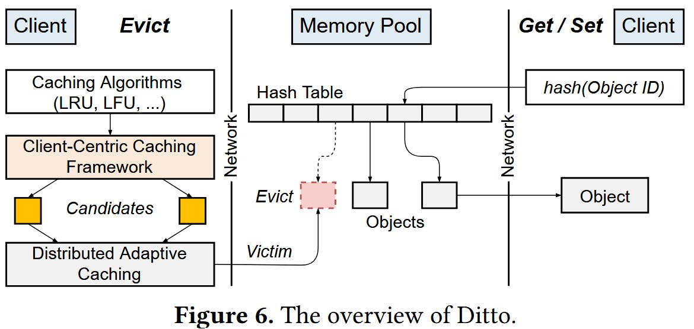
在MN上，Ditto使用哈希表管理缓存对象，表内存储缓存对象的地址。在CN上，每个应用进程启动一个Ditto进程作为客户端，应用进程和Ditto之间通过本地共享内存进行交互以发起SET和GET操作。应用可以通过调整Ditto客户端进程的线程数和CPU核数来调整计算资源的分配。
GET操作流程：客户端首先通过一个RDMA_READ操作从哈希表中获取缓存对象地址，再通过一个RDMA_READ操作从对象地址读回缓存对象。
SET操作流程：客户端通过一个RDMA_READ操作读回缓存对象在哈希表中对应的slot，随后通过一个RDMA_WRITE操作将缓存对象写入新地址，最后通过一个RDMA_CAS操作在对应slot中修改的缓存地址。
Client-Centric的缓存框架
针对于第一个挑战点，Ditto提出了Client-Centric的缓存框架。
（1）缓存对象元数据及操作接口
首先，Ditto为每个缓存对象维护一个元数据，用于记录访问信息，并为客户端提供了两个接口：priority(Metadata)用于根据元数据计算缓存优先级；update(Metadata)用于更新元数据。元数据的具体内容可以根据所需引入的缓存算法而定制，Table 1列举了多数缓存算法常用的缓存访问信息。
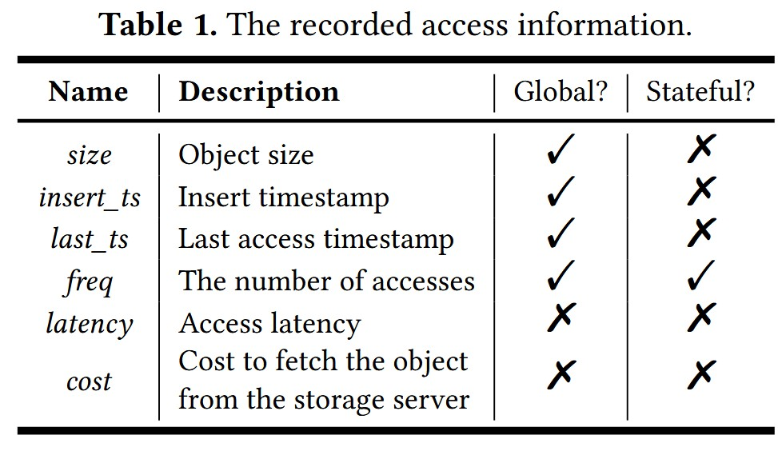
在此基础上，当使用LRU-K算法时，update和pirority可以实现如下：
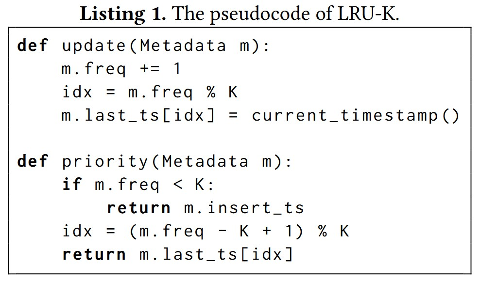
其次，Ditto采用了一种优先级评估采样的方式来选择来选择缓存驱逐对象。具体来说，每次执行缓存驱逐时，客户端将在所有缓存对象中随机采样K个对象，对其执行pirority函数计算优先级，并将其中优先级最低的缓存对象驱逐。由此，Ditto不必花费大量性能开销用于维护如链表、队列、堆等数据结构。
（事实上，当下Redis采用缓存淘汰方案也正是基于随机采样的缓存淘汰策略——NearlyLRU，其目的也同样是为了避免对复杂数据结构的维护开销，只需要一个哈希表即可实现缓存）
（2）Sample-friendly哈希表
如果将元数据和缓存对象一同在内存池中离散存储，无论是priority函数读元数据还是update函数写元数据，都需要多次RDMA操作来完成，这就容易系统吞吐率受限。
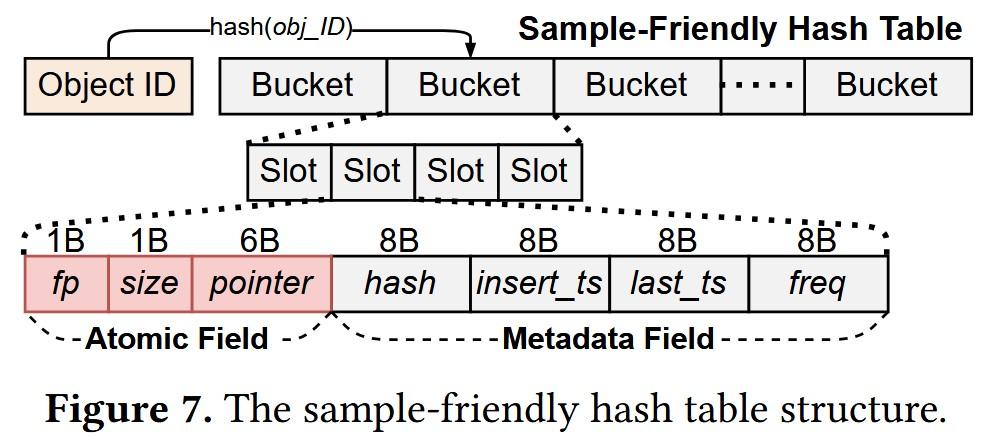
为了减少RDMA操作次数，Ditto将元数据拆分，把不同缓存算法通用的缓存访问信息跟随索引一同存储在哈希表中（如Figure 7中的insert_ts、last_ts、freq），由此在priority和update过程中减少一次RDMA操作。
进一步地，Ditto还通过两个维度的分类来继续减少元数据维护过程中的RDMA操作次数（如Table 1示例）：
Global信息是需要所有客户端共同维护的访问信息（如insert_ts、last_ts、freq），它们需要被放入元数据中；Local信息则无需共同维护（如latency、cost），每个客户端根据自身情况得出即可，因为在同一集群下每个客户端得到这类信息的结果基本相同，无需放入元数据中进行维护，从而减少RDMA网络开销
Stateless信息是通过覆盖写的方式进行更新的访问信息（如insert_ts、last_ts），因此可以将这类信息组织在连续地址上通过单个RDMA Write操作完成多个数据的更新；Stateful信息的更新则依赖于其历史值（如freq），只能逐个通过RDMA FAA操作更新。
（个人这个设计点存在一定疑点。对于Stateless信息，它们往往不一起更新，比如insert_ts和last_ts更新的时机就不一致，那么这个设计点就没啥用。对于会被一起更新的多个Stateless信息，由于RDMA Write只能保证cacheline粒度的原子性，只用RDMA Write更新多个Stateless信息可能会存在不一致问题，这个设计点也派不上用场）
（3）元数据更新缓存
Ditto客户端会在本地维护一个缓存，用于合并对同一个缓存对象元数据的更新，延迟提交到内存节点。当因为元数据更新缓存满了或者更新次数超出阈值时，对元数据的更新才会合并更新到内存节点上，以此减少RDMA网络往返次数。
分布式自适应缓存
针对第二个挑战点，Ditto提出了分布式自适应缓存方案来应对DM上不断变化的工作负载和动态资源变更。
（1）一体式服务器架构下的自适应缓存方案
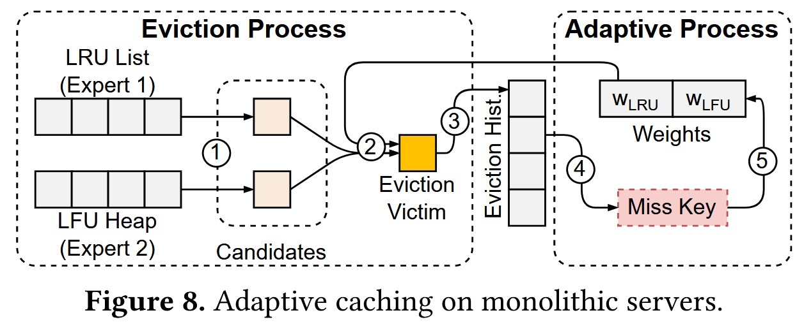
自适应缓存方案在一体式服务器架构下的缓存系统也有被应用。缓存服务同时执行多个缓存算法，各自维护缓存队列，称之为专家（Expert）。每个专家都分配了一个权重值，用于反应在当前工作负载的表现。当缓存淘汰发生时，其大体流程可以分为几个步骤（Figure 8）：
每个专家根据自身算法分别给出一个淘汰候选对象；
根据各个专家的权重值，从候选对象中挑选出最终的淘汰对象（专家权重值越高，其给出的候选对象更容易被最终淘汰）；
淘汰对象的元数据被放入一个固定大小的FIFO队列，称为淘汰历史队列；
当后续访问发生缓存缺失时，判断缺失对象是否在淘汰历史队列中；
若缺失对象在淘汰历史队列，说明先前的驱逐选择不理想，相应降低对应专家的权重值。
但DM架构下的缓存系统无法直接采用上述方案，因为此时FIFO淘汰历史队列和专家权重将会面临大量远程客户端的RDMA访问，为保证并发安全引入的同步机制将会造成巨大的性能开销。Ditto则针对这两个数据结构进行优化来解决问题。
（2）轻量级淘汰历史
Ditto通过嵌入历史信息和逻辑FIFO队列的方式避免了实际维护FIFO淘汰历史队列的性能开销。
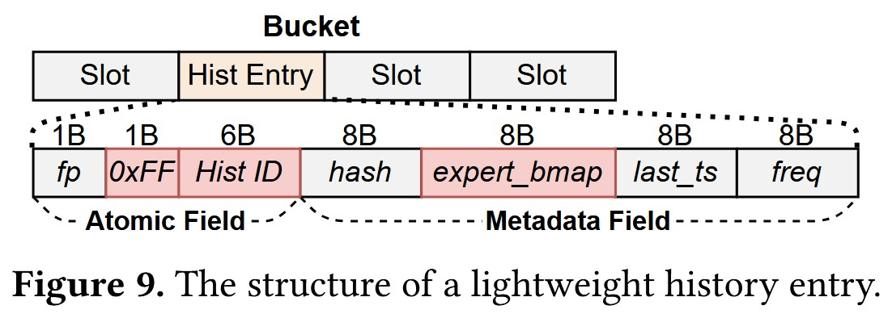
当一个缓存对象被淘汰时，Ditto会在哈希表中对应的元数据slot写入历史信息，从而将其转变为一个历史条目。具体而言如Figure 9，size字段将被设置为0xFF标记该slot为历史条目（为0则代表空slot）；pointer字段被写入一个唯一的历史ID；insert_st字段则用于存储专家位图expert_bmap，用于指示其是被哪个专家选出淘汰的。此外，hash字段用于存储缓存对象ID，它在缓存被插入时便被设置，直到从淘汰历史队列中彻底驱逐才会被修改。
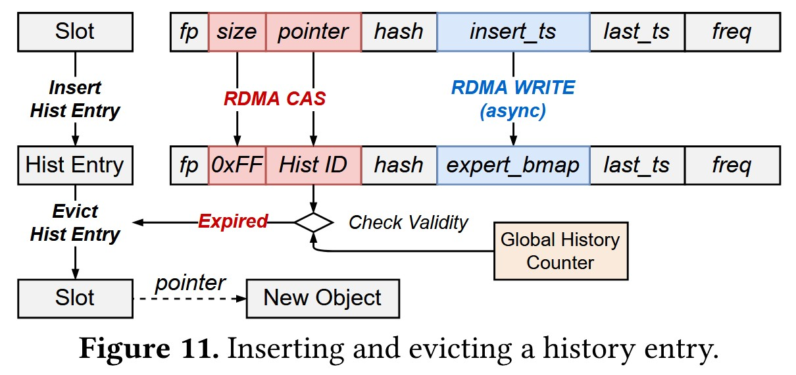
有了上述历史信息嵌入，Ditto得以维护一个逻辑FIFO队列，而非实际物理结构。Ditto设置了一个6-bytes的全局历史计数器，与历史ID相对应。当客户端将一个缓存对象淘汰时，它通过RDMA_FAA操作从计数器中取得一个全局唯一的历史ID，写入pointer字段，该历史ID就代表了缓存对象在逻辑FIFO队列的位置；当客户端访问发生了缓存缺失，若其对应的元数据slot中size字段为0xFF，且pointer字段内的历史ID与当前计数器的差值小于预设的逻辑FIFO队列长度，则说明目标缓存对象在历史淘汰队列当中，随后根据insert_st字段内的expert_bmap调整对应专家权重。
（3）延迟专家权重更新
当一个缓存缺失对象在淘汰历史队列的第t位被发现时，其对应的专家权重将依据\(w_{E_{i}}=w_{E_{i}} \cdot e^{\lambda d^t}\)调整，其中\(\lambda\)是学习率，\(d^t\)是惩罚项。显然这个过程无法通过RDMA_FAA或RDMA_CAS简单地实现，多个客户端之间需要同步机制进行正确的并发更新，这就引入了昂贵的同步开销。
为此，Ditto令客户端在本地缓存对专家权重的调整，并批量化地提交到处于MN的专家权重控制器，由它进行统一调整。
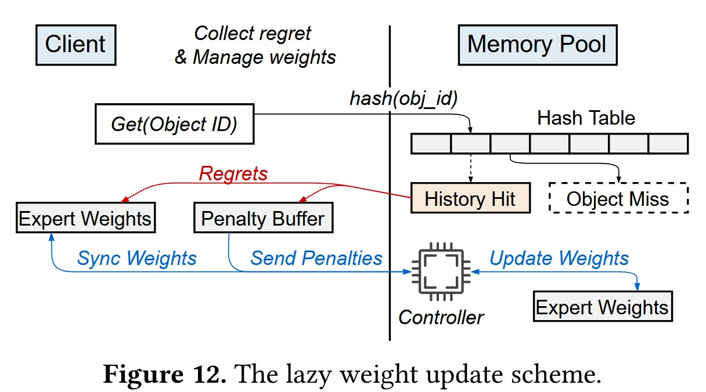
如Figure 12，客户端在本地维护了一个惩罚缓冲区。当发现缺失对象存在于缓存淘汰队列时，它将在惩罚缓冲区中暂存权重调整系数\(e^{\lambda d^t}\)，以相乘的方式不断累积权重调整。直到一定的缓冲时间或调整次数后，客户端以RDMA-based RPC的方式将缓存的调整系数提交给MN的控制器，由它进行权重更新，随后返回最新的专家权重给客户端。
由此，Ditto通过中央集中更新的方式避免了复杂同步机制可能对吞吐率造成的影响，并且由于该计算过程较为简单，并不会为MN引入复杂的计算开销。
实验测试
简单放几个比较重要的实验，更多的实验分析可以直接阅读原文获取。
文章将Ditto与Redis、CliqueMap（CM）以及Shard-LRU进实验对比，使用了YCSB测试负载和一些真实负载。从实验结果上看，Ditto的优势还是相对领先的。
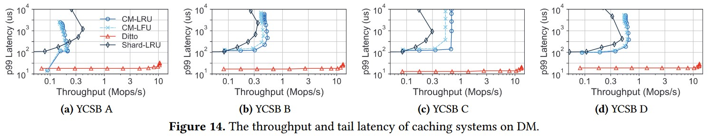
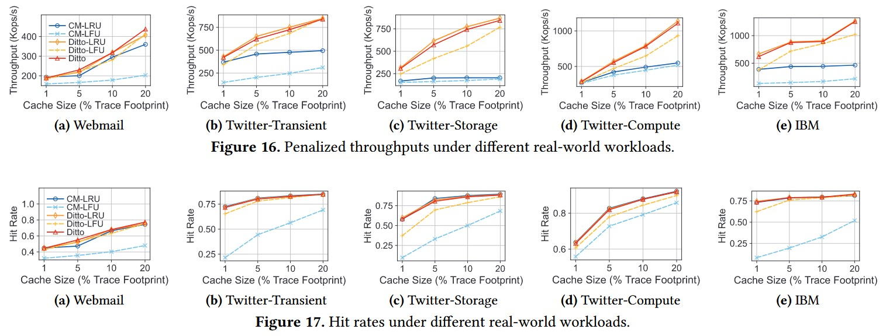
总结和讨论
Ditto主要针对了DM架构下的缓存系统构建进行了探讨。
针对高效缓存算法执行的实现，Ditto选择了使用基于采样的缓存淘汰策略以避免复杂数据结构的维护，并通过优化缓存访问信息的布局来减少过程中RDMA网络操作的次数。
针对自适应缓存策略的实现，Ditto巧妙地通过全局计数器实现了逻辑FIFO队列，从而避免了实际物理结构的维护开销，并通过权重调整的批量化提交和中心化维护方案，避免了多客户端并发更新权重所导致的同步开销。